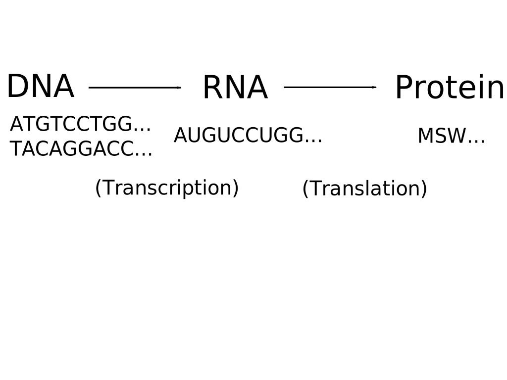
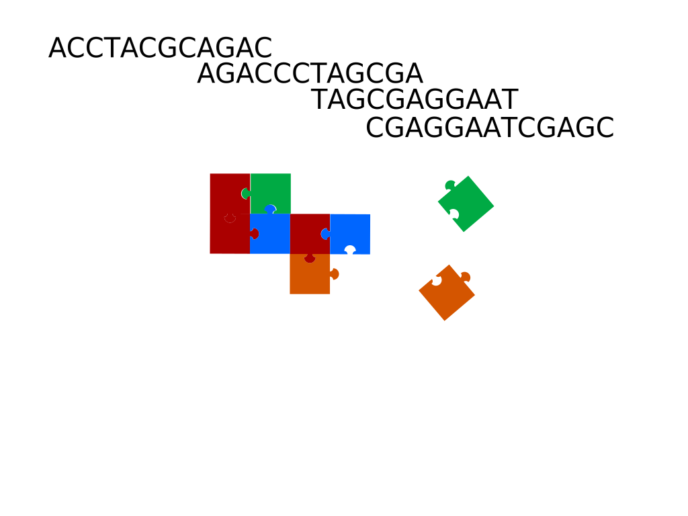
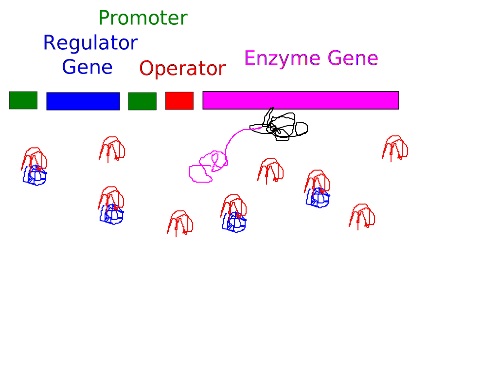
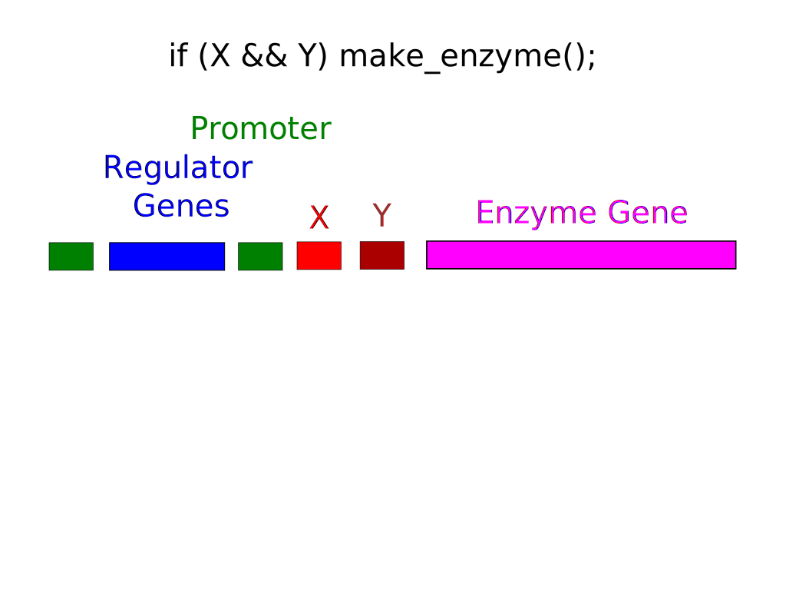

The 3.5 billion year software project
Doug Hoyte
The Central Dogma of Molecular Biology

The Central Dogma of... Unix?
DNA is really small
Transcription
- Transcription is the process of building RNA from DNA templates
- DNA and RNA have a one-to-one correspondence except thymine is changed into uracil (
tr/ATCG/AUCG/)
- DNA strands are separated by helicase protein so that RNA polymerase can transcribe them to RNA (which is usually single-stranged)
Polymerase Chain Reaction
- A laboratory process to rapidly duplicate a tiny amount of DNA billions of times (exponential growth)
- Similar to how DNA replicates naturally except uses thermocycling
Sanger Sequencing
- Adds special terminal nucleotides that stop the polymerase reaction
- These special nucleotides are tagged so they glow particular colours under UV light:
Electrophoresis
- The DNA segments are put at one end of an agarose gel solution then a voltage is applied
- Nucleic acid sequences are negatively charged so they will move towards the positive terminal
- Longer sequences will move slower than shorter sequences because they are heavier
Analyze Flouresence Peaks
Restriction Enzymes
- Restriction enymes cut DNA molecules at certain sub-strings (usually palindromes so they can cut both strands)
- Bacteria have them to destroy virus DNA sequences (the original anti-virus scanners)
- For example, EcoRI looks for the sequence GAATTC
Whole-genome sequencing
- Electrophoresis can only handle sequences of up to a few thousand base pairs in length
- Long DNA molecules must be cut up by restriction enzymes (or at random by ultrasound)
- After cutting we are left with many overlapping fragments
Alignment
- Full genomes can be sequenced by sequencing and then aligning overlapping fragments

Example genome
- Bacteriophage (virus that attacks bacteria) called Phi-X-174
- First genome ever fully sequenced (in 1977)
- Single-stranded, circular DNA
- Very small genome: 11 genes, 5386 bases (10772 bits, 1347 bytes)
- Overlapping gene coding regions
- Genome has been synthesized from scratch in the lab
|

|
Bacterium minding its business
Phage inserts DNA Plasmid
- The phage finds an opening in the cell wall called a port and injects its DNA
DNA Plasmid is replicated
- The phage's DNA is copied by the cell's polymerase
DNA Plasmid -> RNA -> Phages
- The phage's genes are transcribed and translated into proteins which build copies of the phages
Cell wall lysis, death of bacterium
- A gene in the phage's DNA is expressed (turned on) which creates a protein that breaks down the cell wall, killing the bacterium and releasing the phages
- Custom-engineered phages may be our last line of defense against super-bacteria that survive all anti-bacterial medicines
Translation: The Genetic Code
- A ribosome translates groups of 3 RNA bases called codons into amino acids and appends them onto a chain until it sees a stop instruction
- The results are amino-acid chains which fold into proteins
Redundancy in the genetic code
- The number of codons is 43 = 64
- 3 encode start: AUG, GUG, and UUG. As start codons they all encode M but mid-sequence they encode M, V, and L respectively
- 3 encode stop: UAG, UGA, and UAA
- Since only 20 amino acids are encoded for, there is about a 3:1 redundancy in the code
- AGC, AGU, UCU, UCC, UCA, and UCG encode Serine
- But only UGG encodes Tryptophan
Reading Frames
- The ribosome can start translating "mid-sequence"
- And "backwards" on the reverse complement strand (assuming double-stranded DNA)
- Or even in circles (bacterial plasmids, human mitochondrial DNA)
BioBricks Standards
- BioBricks is a set of standards for combining small sequences of DNA into larger programs
- You can order "parts" (red and blue) and they are shipped to you embedded in plasmid backbones
- Each part is surrounded by restriction sites (green) so they can be cut out easily
Ligating BioBricks Parts
- After cutting the parts out with restriction enzymes, they are glued together and inserted into a new plasmid backbone with ligase enzymes
- A small "scar" is left over (purple)
- This composite part can be combined with more parts or inserted into bacteria once you are ready to run the program
Avoid Restriction Sites in Parts
- Because restriction enzymes are used in the BioBricks assembly process, your parts can't contain certain restriction site sequences
- Importing coding sequences from other species isn't a problem due to genetic code redundancy:
Gene expression
- E. Coli produces the β-galactosidase enzyme to convert lactose into glucose (food) but only when there's actually lactose present
- The "Lac operon" is a genetic if statement
How the Lac operon works
- RNA polymerase usually attaches to DNA at promoter sites
- The regulator gene is transcribed into repressor RNA molecules
The lac operon: Repressed state
If there is no lactose around, the repressors bind to the operator site on the DNA, blocking the RNA polymerase from transcribing the enzyme gene
The lac operon: Expressed state
Lactose attaches to the repressors so they can no longer bind to the operator site, allowing the RNA polymerase to transcribe the enzyme gene

Boolean And

Boolean Or
Regulatory networks
- Many parts of DNA interact with many other parts indirectly via their RNA products
- This diagram depicts a flower development network (from Trinity College Dublin)
|
|
"Junk" DNA
- In human DNA there are tons of repetitive sequences (counting their lengths is how paternity tests and FBI's CODIS data-base work)
- The parasitic Alu sequence makes up over 10% of the human genome:
GCCGGGCGCGGTGGCGCGTGCCTGTAGTCCCAGCTACTCGGGAGGCTG
AGGCTGGAGGATCGCTTGAGTCCAGGAGTTCTGGGCTGTAGTGCGCTA
TGCCGATCGGGTGTCCGCACTAAGTTCGGCATCAATATGGTGACCTCC
CGGGAGCGGGGGACCACCAGGTTGCCTAAGGAGGGGTGAACCGGCCCA
GGTCGGAAACGGAGCAGGTCAAAACTCCCGTGCTGATCAGTAGTGGGA
TCGCGCCTGTGAATAGCCACTGCACTCCAGCCTGGGCAACATAGCGAG
ACCCCGTCTCT
- "Junk" DNA is non-coding (commented out) and it mutates a lot since such mutations don't usually crash the program
RNA Splicing
- In eukaryotes like humans, before RNA is translated into proteins it is post-processed by spliceosomes
- Sort of like calling subroutines since it allows code re-use when building different but similar proteins
Conclusion
- I think it's unlikely there is a god because an intelligent designer would create a cleaner byte-code ;)
- Still, DNA is the best hack ever (it hacked us together after all)
- DNA is software so let's write some for ourselves
- Questions/comments?